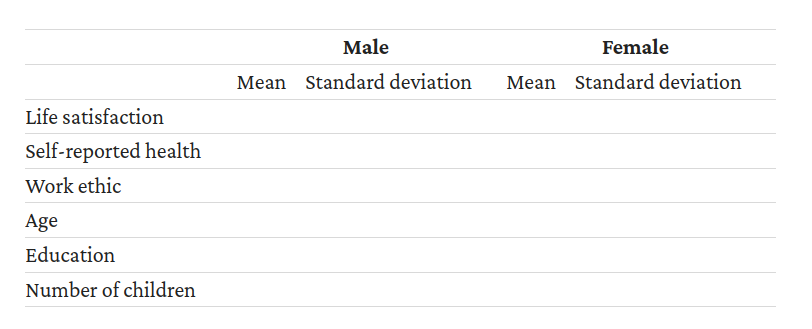

import pandas as pdData-Based Economics: Coursework
Students (up to 3):
When working on the questions below, don‚Äôt hesitate to take some initiatives. In particular, if you don‚Äôt find how to answer a particular question (and you have asked üòâ), feel free to propose a workaround.
Your work will be evaluated in the following dimensions:
- Whether your notebook is replicable. When grading it, I should be able to run it from start to finish without error.
- Whether it is well written and clear. There should always be legible text to explain what you do, and make it a nice read. Imagine that the document was meant to be published as an online tutorial.
- Whether you have successfully solved the various theoretical and practical problems that are asked below.
- Whether you have shown some sense of initiative in approaching the various problems, in making the plots or in proposing extensions.
This homework is partly based on one of the projects from the excellent Doing economics section of the Core Econ website.
Don’t hesitate to browse the website to get more context. You can even check the solutions in R to get an idea of what you can do.
Import the
The data originates from the EVS project (https://search.gesis.org/research_data/ZA4804). It has been used in the article Employment status and subjective well-being: the role of the social norm to work.
Loosely following the spirit of the authors work, our goal will be to investigate one channel through wich unemployement can lead to lower life satisfaction. The general hypothesis is that social norms are key to the subjective disutility of being unemployed. In this notebook we focus on one particular called work ethic.
Question 1
Open the economics.xlsx workbook with excel. Fill the first sheet using the ZA4804_EVS_VariableCorrespondence.pdf file. Upload the resulting file and run the following code to import the data.
# the following imports the variable correspondances.
variables = pd.read_excel("economics.xlsx", sheet_name=0)# check the variable correspondances
variables| Variable | New name | Variable description | |
|---|---|---|---|
| 0 | S002EVS | NaN | NaN |
| 1 | S003 | NaN | NaN |
| 2 | S006 | NaN | NaN |
| 3 | S009 | NaN | NaN |
| 4 | A009 | NaN | NaN |
| 5 | A170 | NaN | NaN |
| 6 | C036 | NaN | NaN |
| 7 | C037 | NaN | NaN |
| 8 | C038 | NaN | NaN |
| 9 | C039 | NaN | NaN |
| 10 | C041 | NaN | NaN |
| 11 | X001 | NaN | NaN |
| 12 | X003 | NaN | NaN |
| 13 | X007 | NaN | NaN |
| 14 | X011_01 | NaN | NaN |
| 15 | X025A | NaN | NaN |
| 16 | X028 | NaN | NaN |
| 17 | X047D | NaN | NaN |
# we now open the datasets corresponding to the various waves of the study
sheets = {
'8184': pd.read_excel("economics.xlsx", sheet_name=1), # wave 1
'9093': pd.read_excel("economics.xlsx", sheet_name=2), # wave 2
'9901': pd.read_excel("economics.xlsx", sheet_name=3), # wave 3
'0810': pd.read_excel("economics.xlsx", sheet_name=4) # wave 4
}# we concatenate all sheets into a single dataframe
df = pd.concat(sheets, names=['wave'], ignore_index=True)Question 2: describe the dataset. Intuitively, which variables would you associate with a higher disutility of unemployment?
Prepare the data
Optional: Change the colum names of df into more meaningful identifiers
This will make the code easier to read.
Note that in the rest of the notebook we use indifferently the variable codes or the extended names.
Question 3: Perform the following cleaning operations:
- Currently all missing values are coded as “.a”. Replace them by
pd.NA - Variable A170 (life satisfaction) is currently a mixture of numbers (2 to 9) and words (‘Satisfied’ and ‘Dissatisfied’), but we would like it to be all numbers. Replace the word ‘Dissatisfied’ with the number 1, and the word ‘Satisfied’ with the number 10.
- Variable X011_01 (number of children) has recorded no children as a word rather than a number. Replace ‘No children’ with the number 0.
- The variables C036 to C041 should be replaced with numbers ranging from 1 (‘Strongly disagree’) to 5 (‘Strongly agree’) so we can take averages of them later. Similarly, variable A009 should be recoded as 1 = ‘Very poor’, 2 = ‘Poor’, 3 = ‘Fair’, 4 = ‘Good’, 5 = ‘Very good’.
- bonus: Split X025A into two variables, one for the number before the colon, and the other containing the words after the colon.
df[df==".a"] = pd.NAdf.loc[df['A170']=='Satisfied','A170'] = 10
df.loc[df['A170']=='Dissatisfied','A170'] = 1df.loc[df['X011_01']=='No children','X011_01'] = 0df[df=="Strongly disagree"] = 1
df[df=="Disagree"] = 2
df[df=="Neither agree nor disagree"] = 3
df[df=="Agree"] = 4
df[df=="Strongly agree"] = 5df[df=="Very poor"] = 1
df[df=="Poor"] = 2
df[df=="Fair"] = 3
df[df=="Good"] = 4
df[df=="Very good"] = 5df['A009'].unique()array([3, 5, 2, 4, 1, <NA>], dtype=object)Question 4: Remove missing values
In your dataset, remove all rows in all waves that have missing data for A170. Do the same for:
- X003, X028, X007 and X001 in all waves
- A009 in Waves 1, 2, and 4 only
- C036, C037, C038, C039, C041 and X047D in Waves 3 and 4 only
- X011_01 and X025A, in Wave 4.
Question 5: Create a new variable work_ethic as the average of columns C036 to C041.
Bonus: Create a variable relative_income which contains income divided by the average income from the relevant country. Why is that a better variable than raw income?
Summary statistics
Question 6: First cross-country comparison.
Create a table showing the breakdown of each country’s population according to employment status, with country (S003) as the row variable, and employment status (X028) as the column variable. Express the values as percentages of the row total rather than as frequencies. Discuss any differences or similarities between countries that you find interesting.
Question 7: Create a table with descriptive statistics aranged after the following layout. Comment.

Visualizing the Data
Question 8: the evolution of work ethic.
Use the data from Wave 3 and Wave 4 only, for one country of your choice: - For this country create a frequency table that contains the frequency of each unique value of the work ethic scores. Also include the percentage of individuals at each value, grouped by Wave 3 and Wave 4 separately. - Plot a column chart showing the distribution of work ethic scores in Wave 3, with the percentage of individuals on the vertical axis and the range of work ethic scores on the horizontal axis. Plot the distribution of scores in Wave 4 on top of the Wave 3 distribution. - Based on your chart does it appear that the attitudes towards work in each country of your choice have changed over time?
Bonus: do the same for another country of your choice and compare.
Question 9: Replicate the same analysis for life satisfaction.
Question 10: for Wave 4 only, compute the correlations of the main variables with life satisfaction and work ethic. It should correspond to the following pattern:
For employment status and gender, you will need to create new variables: full-time employment should be equal to 1 if full-time employed and 0 if unemployed, and treated as missing data (left as a blank cell) otherwise. Gender should be 0 if male and 1 if female.
Interpret the coefficients.
Question 11 Using the data from Wave 4, carry out the following
- Create a table showing the average life satisfaction according to employment status (showing the full-time employed, retired, and unemployed categories only) with country (S003) as the row variable, and employment status (X028) as the column variable. Comment on any differences in average life satisfaction between these three groups, and whether social norms is a plausible explanation for these differences.
- Use the table from Question 4(a) to calculate the difference in average life satisfaction (full-time employed minus unemployed, and full-time employed minus retired).
- Make a separate scatterplot for each of these differences in life satisfaction, with average work ethic on the horizontal axis and difference in life satisfaction on the vertical axis.
- For each difference (employed vs unemployed, employed vs retired), calculate and interpret the correlation coefficient between average work ethic and difference in life satisfaction.
Measuring the non-monetary cost of unemployment
Question 12: using only wave 4, we consider first the following linear regression
\(\text{life satisfaction}_n = \alpha + \beta \text{unemployment}_n + \gamma \text{work ethic}_n\)
Run this regression without any other regressor. Comment on the result.
Question 13: we consider now the regression
\(\text{life satisfaction}_n = \alpha + \beta \text{unemployment}_n + \gamma \text{work ethic}_n + \text{other regressors}\)
Which regressors would you choose? Can you find the combination that maximizes the predictive power of the regression?
Question 14: the effect of work ethics
From the preceding regression can we cannot conclude about the interaction between work ethics and unemployment.
Try to answer that question by running the following steps - create one variable high_work_ethic, equal to 1, if work ethic is above average - run the regression from before for two different dataset, one where high_work_ethic is equal to 1, and another where it is equal to 0 - compare the values obtained for \(\beta\) in both cases - interpret - bonus: make a graphical representation
Question 15: interaction term
Another common approach consists in running a regression with an interacion term, that is
\(\text{life satisfaction}_n = \alpha + \beta \text{unemployment}_n + \gamma \text{work ethic}_n +\delta \text{unemployment}_n \times \text{work ethic}_n+ \text{other regressors}\)
Then if \(\delta\) is negative, higher work ethic implies a stronger effect of unemployment.
Run that regression and comment.
(hint: for statsmodels formula, a*b where a and b are regressors is interpreted as a regression part \(c_1 a+ c_2 b+ c_3 a b\) where \(c_1,c_2,c_3\) are unknown coefficients)
Open question
Question 16: propose any another data work using the same dataframe that you find interesting (graph, econometric analysis, machine learning)